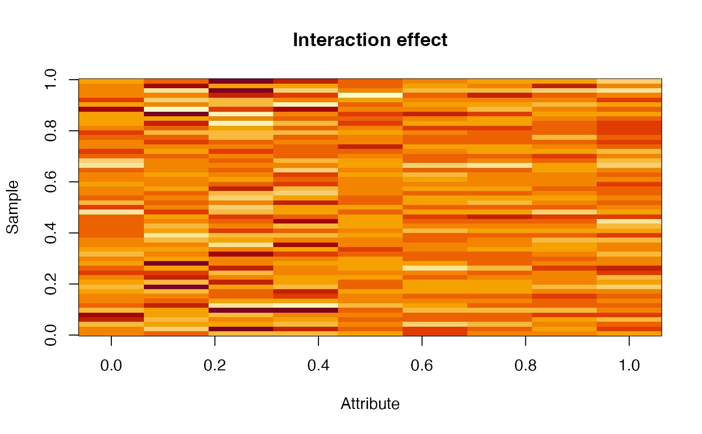

Extracts and sums the LS estimates for a given factor combination
from an object of class hdanova. If add_residuals is TRUE,
the residuals are added to the LS estimates. If remove_factors is TRUE,
the returned matrix is the data with chosen estimates subtracted.
Examples
# Load candies data
data(candies)
# Basic HDANOVA model with two factors and interaction
mod <- hdanova(assessment ~ candy * assessor, data=candies)
# Extract estimates for the interaction
inter <- extract_estimates(mod, c("assessor:candy"))
# Visualize the interaction effect
image(t(inter), main="Interaction effect", xlab="Attribute", ylab="Sample")
